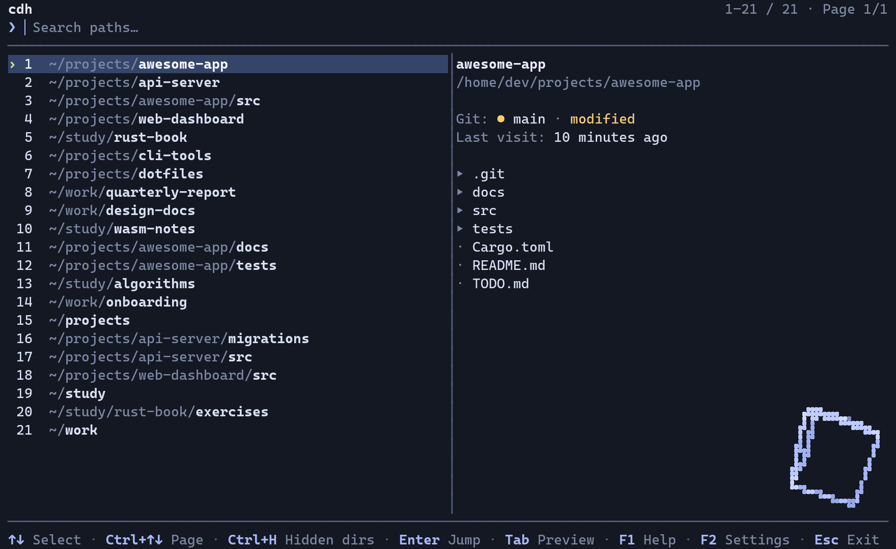

the picker
It looks like your terminal because it is one
One command opens the picker inside your shell. Fuzzy-filter the candidates,
read the preview, hit Enter. cdh performs the jump, hands the
terminal back, and gets out of the way.

- Candidates arrive ranked by frecency, so the paths you actually live in float to the top
- Type to fuzzy-filter across your history and the directories cdh discovered
- Move the selection and the preview follows, with git status and last visit
Tabdrops the preview for a full-width list,Tabagain brings it backF1opens help,F2opens settings: language, theme, preview, colour, mouseEscclears the query,Enterjumps and gives the shell back
The loop plays on its own and carries no audio. If your system prefers reduced motion you get the still frame instead.
what you get
The parts that do the work
What the binary, the scoring model and the picker each give you.
Frecency scoring that decays
Visit frequency is blended with a recency half-life, so the directory you lived in last month stops crowding out the one you opened five minutes ago. $HOME no longer owns the top of the list.
Fuzzy search, live preview
Type a fragment and the list re-filters as you go. The preview pane shows contents, git branch, dirty state, and when you were last there, before you commit to the jump.
History plus the whole tree
The candidate pool merges your cd history with a background scan of the tree, so paths you have never visited are still findable. Excluding a subtree makes it stay gone.
One Rust binary, XDG-clean
A single static-friendly binary at MSRV 1.88. History and state honour XDG_DATA_HOME and XDG_STATE_HOME, and the shell hook is a few lines for bash, fish or zsh.
Seven themes
Graphite, Nord, Daylight, Mono, Dracula, Amber, Forest. No-colour terminals get a full fallback.
The whole keyboard map
- ↑ ↓
- move
- Ctrl+P Ctrl+N
- move, without arrows
- Ctrl+↑ Ctrl+↓ PgUp PgDn
- page
- Home End
- first, last
- ← →
- move the query cursor
- Backspace Delete
- delete before, at the cursor
- Ctrl+U
- clear the query
- Enter
- jump
- Tab
- toggle the preview
- Ctrl+D
- exclude directory and subtree
- Ctrl+H F5
- hidden directories
- F1 ?
- help, fullwidth ？ too
- F2
- settings
- F3 Ctrl+T
- cycle the theme
- F4
- exclusions
- Esc
- close, clear, or exit
Mouse works too: click to select, double-click to jump, wheel to scroll.
English and 中文
The whole TUI speaks both and switches in settings. Fullwidth input works in the query line.
A quiet corner cube
A wireframe cube tumbles in the bottom-right, inside a gutter reserved before the list is laid out, so it never covers a row. Off in no-colour mode, gone entirely with CDH_CORNER_3D=0.
install
What the installer touches
The command in the hero is the fast path. If you would rather look before you pipe, or not pipe at all, this is the whole picture.
The one-liner, unpacked
- Downloads the release binary for your platform to
~/.local/bin/cdh. - Reads
$SHELLto pick your shell, or takes--shell bash|zsh|fish. - Writes the hook under
~/.config/cdh/and adds one marked block to your rc file. - Keeps history and state under
XDG_DATA_HOMEandXDG_STATE_HOME.
Nothing runs as root and nothing lands outside your home. Read the script before you pipe it.